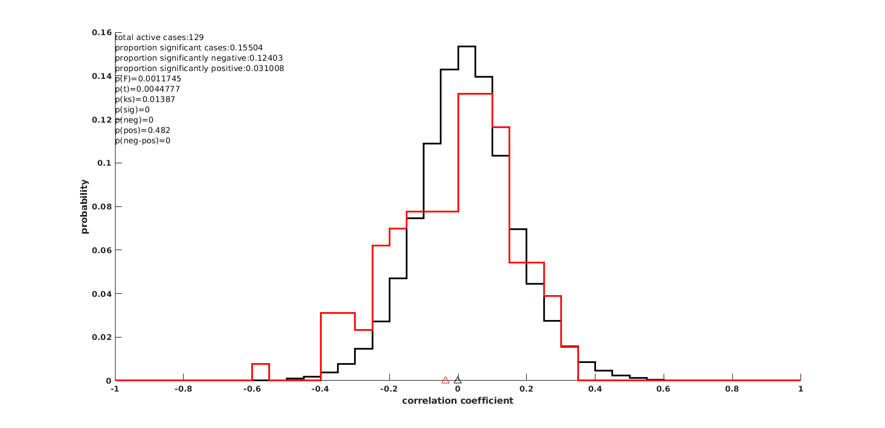
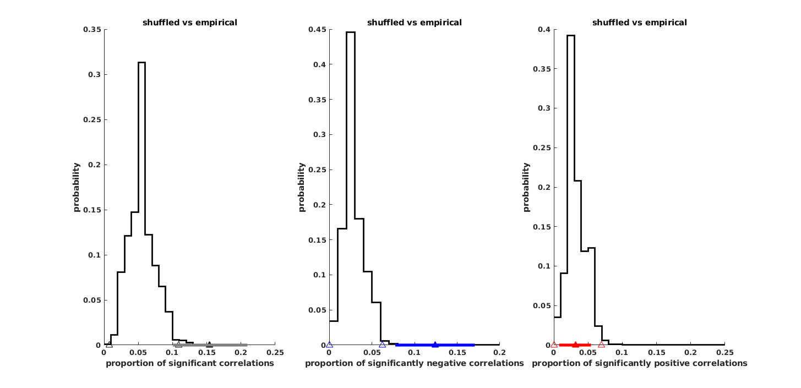
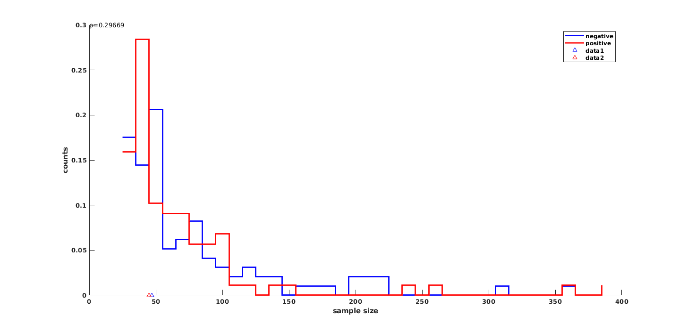

Contents
parameters and input
load('gap_correlation_analysis_singleunits.mat');
activitythresh = 6;
negcorr = find(corrtable.pkactivity>=activitythresh & ...
[corrtable.durcorr{:,2}]'<=0.05 & [corrtable.durcorr{:,1}]'<0);
poscorr = find(corrtable.pkactivity>=activitythresh & ...
[corrtable.durcorr{:,2}]'<=0.05 & [corrtable.durcorr{:,1}]'>0);
sigcorr = find(corrtable.pkactivity>=activitythresh & ...
[corrtable.durcorr{:,2}]'<=0.05);
notsigcorr = find(corrtable.pkactivity>=activitythresh & ...
[corrtable.durcorr{:,2}]'>0.05);
activecases = find(corrtable.pkactivity>=activitythresh);
numcases = length(activecases);
numsignificant = length(find(corrtable.pkactivity>=activitythresh & ...
[corrtable.durcorr{:,2}]'<=0.05));
number of unique active units and birds that went into analysis
disp([num2str(size(unique(corrtable(activecases,{'unitid','seqid'})),1)),...
' cases in ',num2str(size(unique(corrtable(activecases,{'unitid'})),1)),...
' units in ',num2str(size(unique(corrtable(activecases,...
{'birdid'})),1)),' birds']);
126 cases in 18 units in 7 birds
number of unique active units and birds from which significant correlations were found
disp([num2str(size(unique(corrtable(sigcorr,{'unitid','seqid'})),1)),...
' cases in ',num2str(size(unique(corrtable(sigcorr,{'unitid'})),1)),...
' units in ',num2str(size(unique(corrtable(sigcorr,{'birdid'})),1)),' birds']);
20 cases in 7 units in 4 birds
distribution of correlations between empirical and shuffled data
aph = 0.01;ntrials=1000;
shuffcorr = [corrtable(activecases,:).durcorr{:,3}];
shuffpval = [corrtable(activecases,:).durcorr{:,4}];
randnumsignificant = sum(shuffpval<=0.05,2);
randpropsignificant = randnumsignificant/size(shuffpval,2);
randpropsignificant_sorted = sort(randpropsignificant);
randpropsignificant_lo = randpropsignificant_sorted(floor(aph*ntrials/2));
randpropsignificant_hi = randpropsignificant_sorted(ceil(ntrials-(aph*ntrials/2)));
randnumsignificantnegcorr = sum((shuffpval<=0.05).*(shuffcorr<0),2);
randpropsignificantnegcorr = randnumsignificantnegcorr./size(shuffpval,2);
randpropsignificantnegcorr_sorted = sort(randpropsignificantnegcorr);
randpropsignificantnegcorr_lo = randpropsignificantnegcorr_sorted(floor(aph*ntrials/2));
randpropsignificantnegcorr_hi = randpropsignificantnegcorr_sorted(ceil(ntrials-(aph*ntrials/2)));
randnumsignificantposcorr = sum((shuffpval<=0.05).*(shuffcorr>0),2);
randpropsignificantposcorr = randnumsignificantposcorr./size(shuffpval,2);
randpropsignificantposcorr_sorted = sort(randpropsignificantposcorr);
randpropsignificantposcorr_lo = randpropsignificantposcorr_sorted(floor(aph*ntrials/2));
randpropsignificantposcorr_hi = randpropsignificantposcorr_sorted(ceil(ntrials-(aph*ntrials/2)));
randdiffprop = abs(randpropsignificantnegcorr-randpropsignificantposcorr);
figure;hold on;
[n b] = hist(shuffcorr(:),[-1:0.05:1]);
stairs(b,n/sum(n),'k','linewidth',2);
[n b] = hist([corrtable(activecases,:).durcorr{:,1}],[-1:0.05:1]);
stairs(b,n/sum(n),'r','linewidth',2);y=get(gca,'ylim');
plot(mean([corrtable(activecases,:).durcorr{:,1}]),y(1),'r^','markersize',8);hold on;
plot(mean(shuffcorr(:)),y(1),'k^','markersize',8);hold on;
xlabel('correlation coefficient');ylabel('probability');set(gca,'fontweight','bold');
[h p] = vartest2([corrtable(activecases,:).durcorr{:,1}],shuffcorr(:));
[h p2] = ttest2([corrtable(activecases,:).durcorr{:,1}],shuffcorr(:));
[h p3] = kstest2([corrtable(activecases,:).durcorr{:,1}],shuffcorr(:));
p4 = length(find(randdiffprop>=abs((length(negcorr)/numcases)-(length(poscorr)/numcases))))/ntrials;
p5 = length(find(randpropsignificant>=length(sigcorr)/numcases))/ntrials;
p6 = length(find(randpropsignificantposcorr>=length(poscorr)/numcases))/ntrials;
p7 = length(find(randpropsignificantnegcorr>=length(negcorr)/numcases))/ntrials;
text(0,1,{['total active cases:',num2str(numcases)];...
['proportion significant cases:',num2str(numsignificant/numcases)];...
['proportion significantly negative:',num2str(length(negcorr)/numcases)];...
['proportion significantly positive:',num2str(length(poscorr)/numcases)];...
['p(F)=',num2str(p)];['p(t)=',num2str(p2)];['p(ks)=',num2str(p3)];...
['p(sig)=',num2str(p5)];['p(neg)=',num2str(p7)];['p(pos)=',num2str(p6)];...
['p(neg-pos)=',num2str(p4)]},'units','normalized',...
'verticalalignment','top');

distribution of proportion of significant correlations for empirical vs shuffled
figure;subplot(1,3,1);hold on;
[n b] = hist(randpropsignificant,[0:0.01:0.2]);
stairs(b,n/sum(n),'k','linewidth',2);y=get(gca,'ylim');
plot(randpropsignificant_hi,y(1),'k^','markersize',8);hold on;
plot(randpropsignificant_lo,y(1),'k^','markersize',8);hold on;
[mn hi lo] = jc_BootstrapfreqCI([corrtable(activecases,:).durcorr{:,2}]'<=0.05);
plot(mn,y(1),'k^','markersize',8,'markerfacecolor','k');hold on;
plot([lo hi],[y(1) y(1)],'color',[0.5 0.5 0.5],'linewidth',4)
title('shuffled vs empirical');
xlabel('proportion of significant correlations');ylabel('probability');
set(gca,'fontweight','bold');
subplot(1,3,2);hold on;
[n b] = hist(randpropsignificantnegcorr,[0:0.01:0.2]);
stairs(b,n/sum(n),'k','linewidth',2);y=get(gca,'ylim');
plot(randpropsignificantnegcorr_hi,y(1),'b^','markersize',8);hold on;
plot(randpropsignificantnegcorr_lo,y(1),'b^','markersize',8);hold on;
[mn hi lo] = jc_BootstrapfreqCI([corrtable(activecases,:).durcorr{:,2}]'<=0.05 & ...
[corrtable(activecases,:).durcorr{:,1}]'<0);
plot(mn,y(1),'b^','markersize',8,'markerfacecolor','b');hold on;
plot([lo hi],[y(1) y(1)],'b','linewidth',4)
title('shuffled vs empirical');
xlabel('proportion of significantly negative correlations');ylabel('probability');
set(gca,'fontweight','bold');
subplot(1,3,3);hold on;
[n b] = hist(randpropsignificantposcorr,[0:0.01:0.25]);
stairs(b,n/sum(n),'k','linewidth',2);y=get(gca,'ylim');
plot(randpropsignificantposcorr_lo,y(1),'r^','markersize',8);hold on;
plot(randpropsignificantposcorr_hi,y(1),'r^','markersize',8);hold on;
[mn hi lo] = jc_BootstrapfreqCI([corrtable(activecases,:).durcorr{:,2}]'<=0.05 & ...
[corrtable(activecases,:).durcorr{:,1}]'>0);
plot(mn,y(1),'r^','markersize',8,'markerfacecolor','r');hold on;
plot([lo hi],[y(1) y(1)],'r','linewidth',4)
title('shuffled vs empirical');
xlabel('proportion of significantly positive correlations');ylabel('probability');
set(gca,'fontweight','bold');

comparing sample sizes for cases that are negative vs positively correlated
negsampsize = corrtable([corrtable.durcorr{:,1}]'<0,:).ntrials;
possampsize = corrtable([corrtable.durcorr{:,1}]'>0,:).ntrials;activecases = find(dattable.activity>=activitythresh);
maxsize = max([negsampsize;possampsize]);
figure;hold on;
[n b] = hist(negsampsize,[25:10:maxsize+5]);
stairs(b,n/sum(n),'b','linewidth',2);hold on;
[n b] = hist(possampsize,[25:10:maxsize+5]);
stairs(b,n/sum(n),'r','linewidth',2);hold on;
xlabel('sample size');ylabel('counts');
legend({'negative','positive'});
y = get(gca,'ylim');
plot(median(negsampsize),y(1),'b^');hold on;
plot(median(possampsize),y(1),'r^');hold on;
p = ranksum(negsampsize,possampsize);
text(0,1,{['p=',num2str(p)]},'units','normalized');
set(gca,'fontweight','bold');
